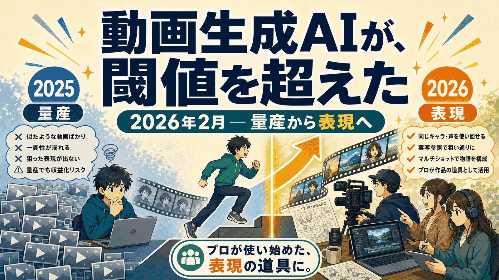
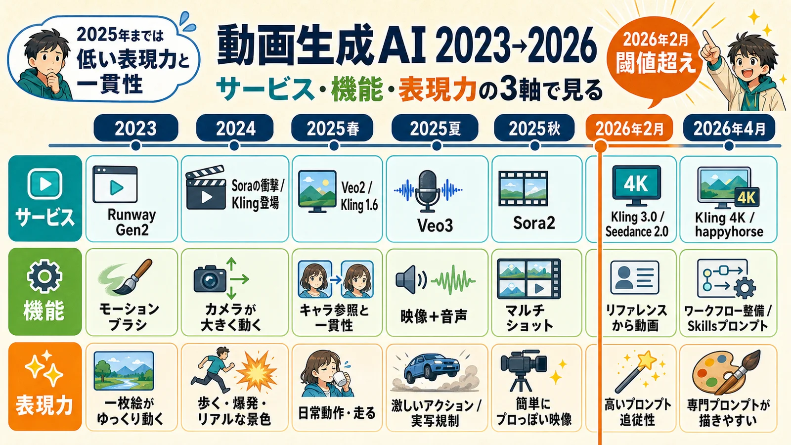
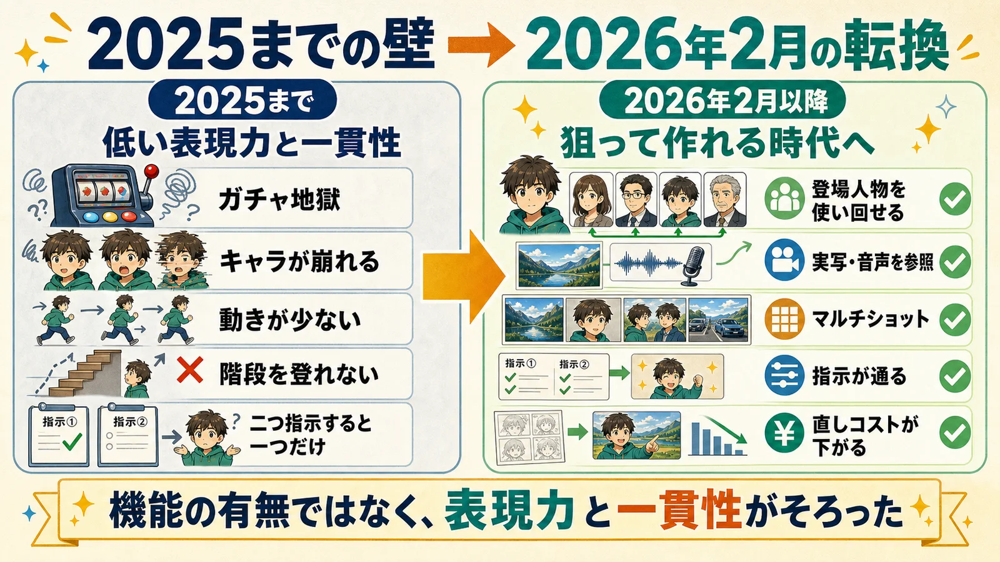
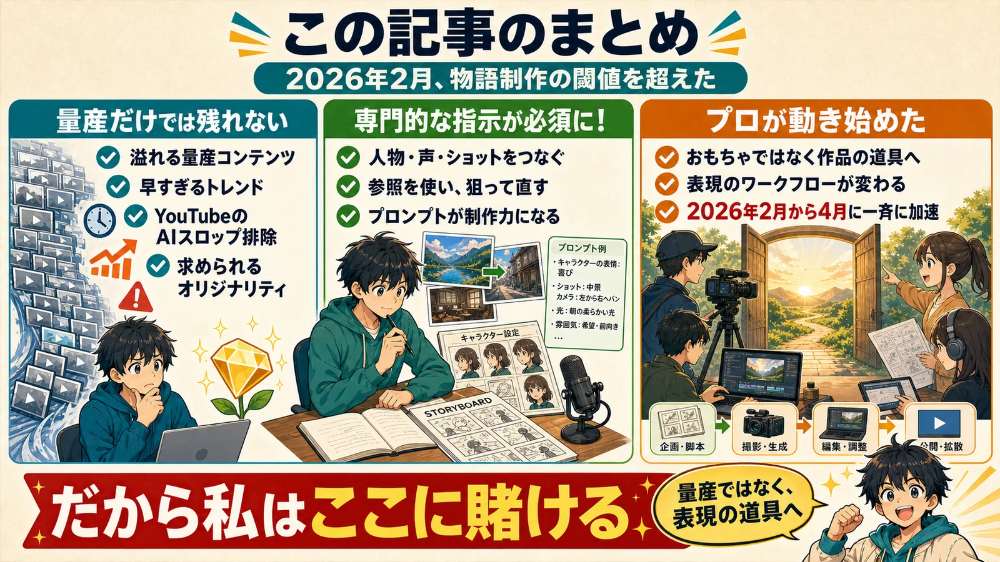

この記事は、特定の製品の購入を勧めるものではありません。技術の転換点をどう見ているかを、開発の現場から整理した記事です。 広告・アフィリエイトの扱いは広告掲載・PR表記方針をご覧ください（本記事に成果報酬型のリンクは含まれていません）。
新しい技術が世界を変えるのは、それが「登場した日」ではありません。
最初は「できる」と言われても、実際には重い。何度も試さないと当たらない。サービス、機能、表現力が別々に伸びていて、ひとつの制作体験としてつながっていない。技術は、出てきた瞬間ではなく、ある一線（閾値）を越えた瞬間に、はじめて世界の中に入り込みます。
動画生成AIにとって、その一線は 2026年2月 でした。
「物語を発信するコンテンツ」を作る環境が、ついに閾値を超えました。 SNSのバズ動画や広告の量産の話ではありません。自分が表現したいものを、表現できるようになった、という話です。
バズ動画量産が話題ですが、、
動画生成AIというと、たいてい「量産」の文脈で語られます。SNS向けのショート、AI tuber、ミーム、ファンタジー世界のドキュメンタリー風動画。海外では Midjourney と Veo 3 でこの手のコンテンツが大量に作られ、SNSには似たようなAI動画が溢れました。
でも、その潮目は変わっています。YouTubeは2025年7月15日のPartner Programポリシー更新で、大量生産・反復的な非真正コンテンツを収益化対象から外しやすくする方向へ舵を切りました。いわゆるAIスロップへの収益化制限です。
トレンドは早すぎるほど早く消費され、差別化もオリジナリティもない量産動画は、広告収益の出口を失いやすくなっています。Kling 3.0 が出た頃に量産された動物を題材にしたストーリー動画は一部生き残っていますが、それも「ストーリーを感じさせる」ものだから残っているわけです。
つまり、「量産できるか」はもう本題ではありません。量産だけでは出口を塞がれます。残った問い、そして私が本当に語りたいのは、こちらです。
自分が表現したい物語を、狙ったとおりに作れるようになったか?
ここを越えられたかどうか。これが本記事の中心です。
2023→2026 ── サービス・機能・表現力の3軸で見る
物語を作れる道具は、実は2023年からありました。「閾値」を理解するには、単にサービス名を並べるだけでは足りません。サービス、機能、表現力の3つの軸で見る必要があります。
| 時期 | サービス | 機能 | 表現力 |
|---|---|---|---|
| 2023 | Runway Gen2 | モーションブラシ | 一枚絵がゆっくり動く |
| 2024 | Sora の衝撃、Kling 登場 | カメラが大きく動く | 歩く・爆発・リアルな景色 |
| 2025春 | Veo2、Kling 1.6 | キャラ参照と一貫性 | 日常動作・走る |
| 2025夏 | Veo3 | 映像+音声 | 激しいアクション・厳しい実写規制 |
| 2025秋 | Sora2 | マルチショット | 簡単にプロっぽい映像 |
| 2026年2月 | Kling 3.0 / Seedance 2.0 | リファレンスから動画 | 高いプロンプト追従性 |
| 2026年4月 | Kling 4K / happyhorse | ワークフローの整備・Skillsによるプロンプト生成 | 専門的なプロンプトを描きやすくなった |

ここで大事なのは、2025年までは、機能があっても表現力と一貫性が足りなかったということです。キャラクター参照、映像と音声、マルチショット。要素だけ見れば、どれも2026年より前に出ていました。
でも、サービス、機能、表現力の3軸が同時にそろっていませんでした。キャラが崩れる。動きが少ない。階段を登れない。二つ指示すると一つしか反映されない。何度も試せば偶然当たることはありますが、狙って作るには重すぎたのです。
象徴的なのが Veo 3 でした。native audio で大きな話題になりましたが、初期は実写画像の入力すら受け付けず、日本語では Veo 特有の訛りが指摘され、そうでなくても「Veo 3 っぽい演技」になりがちでした。結果として、主に AI tuber の量産に使われていきました。Sora 2 はマルチショットと声付きキャラを打ち出したものの、制御は浅く、製品そのものも2026年4月に終わってしまいました。
道具はありました。でも、「自分が作りたい物語を、狙って組み立てる」という一線は、誰も越えていませんでした。
2026年2月 ── Kling 3.0 と Seedance 2.0 で一線を越えた
そして転換点が来ます。Kling 3.0 と Seedance 2.0 です。

何が変わったのか。一貫性や音声という個別機能の話ではありません。「作りたいカットを狙って組み立て、前後のカットとつなぎ、やり直しのコストを下げる」道具立てが、一式そろったのです。
- 声まで含めた“使い回せる登場人物”。短い人物動画から見た目と声をまるごと資産化して、カットをまたいで何度でも呼び出せます。「同じ顔の別ショット」ではなく、同じ人物そのものを引き回せます。
- 実写の参照入力。Seedance 2.0 は画像・動画・音声をまとめて参照に取れます。「それっぽい誰か」ではなく「この人」を起点に作れます。
- マルチショットの叙事と、ディレクター級の細かい制御。狙ったアングル、狙った演技、狙った間（ま）。
- 4月にはネイティブ4K直出しまで来て、納品フォーマットの実務水準も越えてきました。
この差は、触ればわかります。2025年までは「それっぽいけど、なんか違う」を量産していました。2026年2月からは、「自分の頭の中にあった物語を、作れる」に変わりました。ガチャ地獄から抜け、狙い、つなぎ、直せるようになった。これが閾値です。
いちばん大きいのは「プロが使い始めた」こと
機能の話より、私にとって決定的だった事実があります。
本物の映像制作のプロが、これで作品を作り始めました。 Kling 3.0 と Seedance 2.0 が出てから、長年その業界にいた人たちが、自分の表現の道具としてこれを握り始めたのです。2026年2月の WAIFF（AI映像のフェスティバル）に並んだ作品を見ればわかります。もはや Veo 3 も Runway Gen-4 もメインではありません。部分的には使われますが、主役ではなくなりました。
道具が「おもちゃ」から「作品の道具」に変わったかどうかは、誰が握り始めたかで分かります。 プロが握りました。それが答えです。
ワークフローに至っては、いまも猛烈な勢いで変わり続けています。2025年に語られていた「n8n で量産パイプラインを組む」という話は、もう古いものです。動けば使えなくはありませんが、固定のワークフローで一発出しというのは、まったく実用になりません。素材を一つずつ修正する必要があります。3〜4月には Freepik（現Magnific）や Figma Weave のような、制作レイヤーのワークフローツールが一気に表へ出てきました。
そして、もっと大きな転換が起きています。既製のワークフローツールを「使う」時代から、AIエージェントを自分で「作る」時代へ。 私自身、いままさに Claude Code + Skills で、自分の制作ワークフローを組み立てている最中です。これがこの先どこまで変わっていくのかは、まだ誰にもわかりません。そしてこれも、もう一つの大きな転換点に見えています。
ここから先は、単にモデルを選ぶだけでは足りません。人物、声、ショット、カメラ、演技、参照素材をどうつなぐか。専門的な指示を組み立てる力そのものが、制作力になります。 だからこそ、量産の自動化ではなく、表現のためのワークフロー設計が重要になります。
分かっている人は、もう動いている
この変化に、業界全体のコンセンサスはまだありません。けれど、転換点とはいつもそういうものです。
新しいものの本質を最初に見抜くのは、いつの時代もイノベーターとアーリーアダプター ── 本質を見抜く、影響力のある一握りの人たちです。世間の評価が固まるのを待っていたら、転換点はとうに過ぎ去っています。
そして、その一握りは、もう動いています。
- Higgsfield の映画制作チーム
- Netflix の AI制作チーム
- Magnific をはじめとする AI映像レーベルの相次ぐ立ち上げ
- WAIFFに投稿した人たち
2026年2月から4月にかけて、彼らが一斉に動き出しました。 バラバラの個人が、申し合わせたわけでもないのに、同じ時期に同じ方向へ動き出しています。これは流行りではなく、市場の前提が動くときの兆候です。
分かっている人は、もう動いています。ですから、私も動かなければなりません。
だから私はここに賭ける
そういうわけで、3月・4月・5月と、私はひたすら手を動かし、片っ端から触り、とことん使い込んできました。そして一通り使い込んだいま、movie_digest で実際にシーンを作り始めています。
私はこう見ています。動画生成AIは2026年2月に、物語を作るための一線を越えました。量産ではなく、表現の道具として。本質を見抜く人たちは、もう動いています。ここに、明確なビジネスチャンスがあります。だからこそ、私はここにかけます。
人生を賭けるに値する一線の、向こう側に立っています。記録としては、ここがスタート地点です。
